Charades · Animals · page 12/13 · all packs
Reject an image by adding its slug to public/charades/charades-animals/reject.txt (append ! to keep it word-only), then re-run node scripts/genimages.mjs.
1 2 3 4 5 6 7 8 9 10 11 12 13 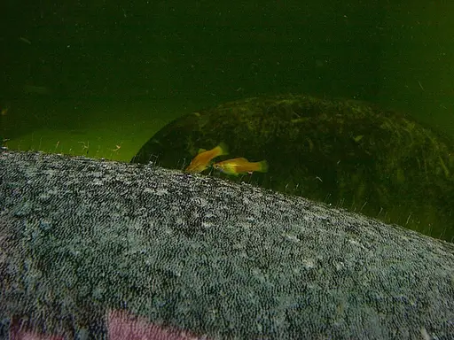
Swordtail swordtailPublic domain · Photo made by User:Sebastian Wallroth · source 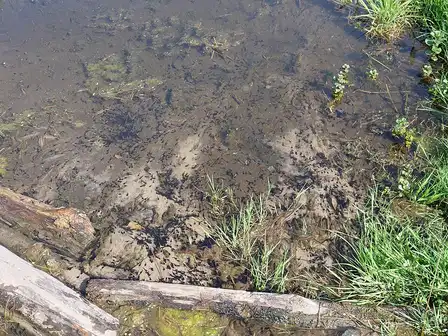
Tadpole tadpoleCC BY-SA 4.0 · Leonhard Lenz · source 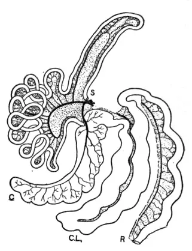
Tapir tapirPublic domain · AnonymousUnknown author · source 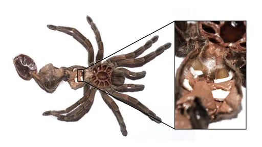
Tarantula tarantulaCC0 · Oneillbeck · source 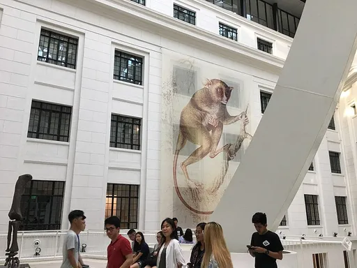
Tarsier tarsierCC BY-SA 4.0 · Julan Shirwod Nueva · source 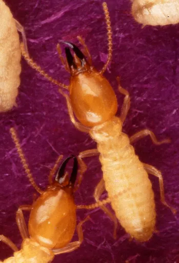
Termite termitePublic domain · Coptotermes_formosanus_shiraki_USGov_k8204-7.jpg: Photo by Scott Bauer. derivative work:--> த.உழவன் · source 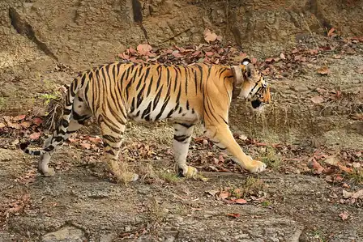
Tiger tigerCC0 · Davidvraju · source 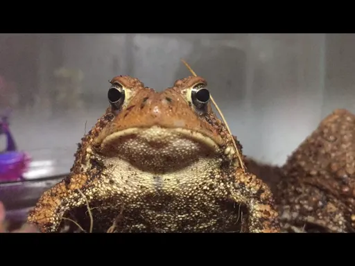
Toad toadCC0 · Big.top.music.man · source 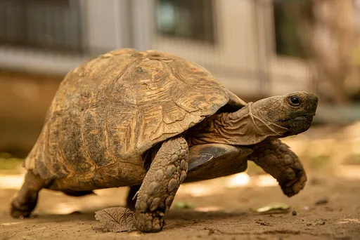
Tortoise tortoiseCC BY-SA 4.0 · AlvinDulle · source 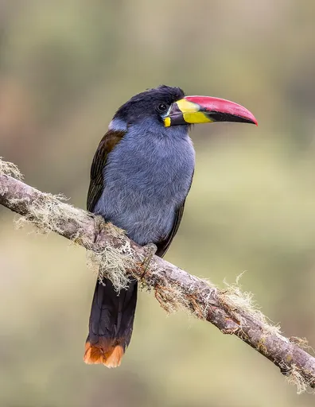
Toucan toucanCC BY-SA 4.0 · Charles J. Sharp · source 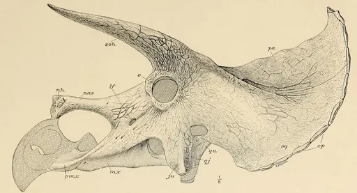
Triceratops triceratopsPublic domain · John Bell Hatcher and Richard Lull · source 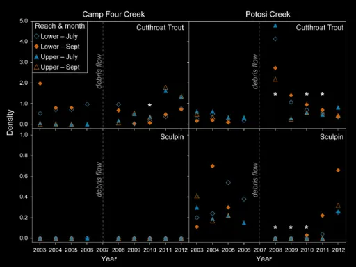
Trout troutCC BY 4.0 · Alex D. Foster, Shannon M. Claeson, Peter A. Bisson, John Heimburg · source 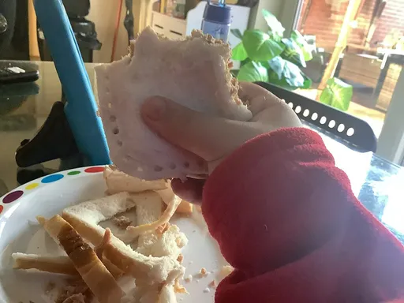
Tuna tunaCC0 · Interwikifood · source Turkey turkeyCC0 · Mostafameraji · source 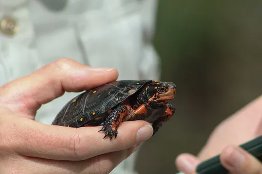
Turtle turtlePublic domain · Holly Keepers, United States Fish and Wildlife Service (USFWS) · source 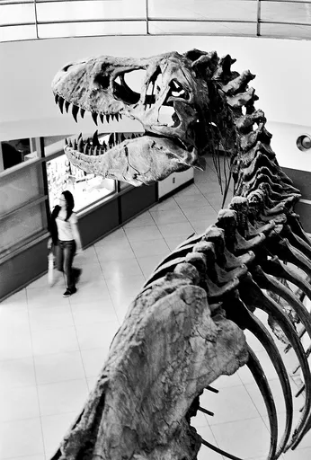
Tyrannosaurus tyrannosaurusCC BY 4.0 · Todd Merport · source 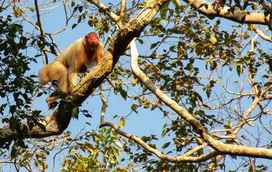
Uakari uakariCC0 · Whaldener Endo · source 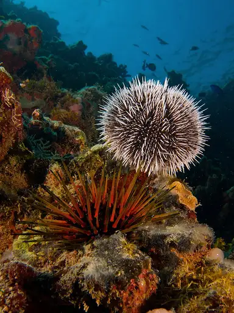
Urchin urchinCC BY-SA 3.0 · Nhobgood (talk) Nick Hobgood · source 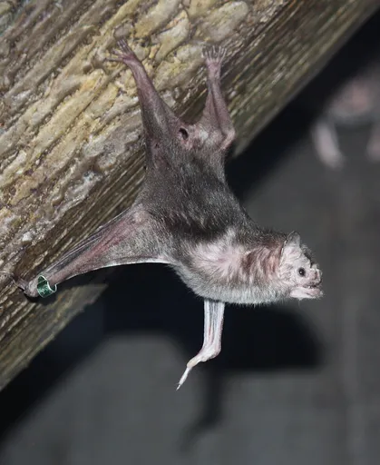
Vampire bat vampire-batCC BY-SA 3.0 · Ltshears · source 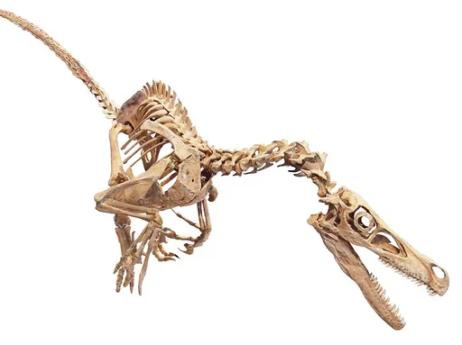
Velociraptor velociraptorCC BY 3.0 · Eduard Solà Vázquez · source 1 2 3 4 5 6 7 8 9 10 11 12 13